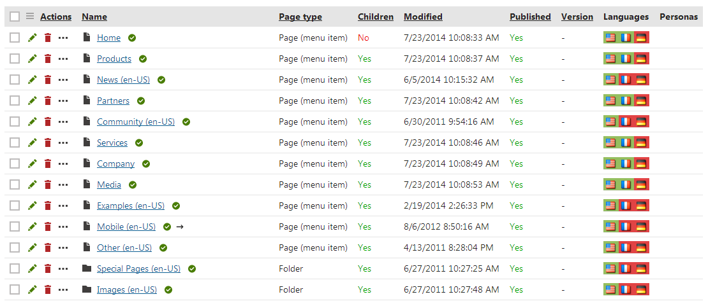
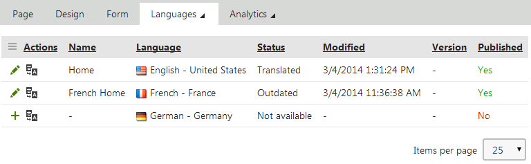

Language status overview
The Listing mode of the Pages application provides an overview of page language versions.
If you select a page in the content tree and switch to Listing mode, you can see all child pages.
The Languages column displays flags with differently colored backgrounds for all languages available on the website. The flags represent particular language versions of pages and indicate the following statuses:
Green - Translated - the page is available in the given language and up-to-date. The actual language of the page's content has no effect on the status, the system only checks whether the language version exists.
Orange - Outdated - the language version exists for the page , but is outdated. The system considers language versions to be outdated if the default language version of the page has been modified (or published when using workflow) more recently.
Red - Not available - the page does not exist in the given language. You can also see the
 icon next to pages in the content tree.
icon next to pages in the content tree.
The Waiting for translation status indicates that the page exists in the given language, but its content has not been translated yet. The page's content is currently submitted to a translation service.
You can manage the translation submission in the Translations application.
Clicking a Translated or Outdated flag opens the Page tab of the appropriate language version of the page. If you click a Not available flag, the language version's creation dialog opens.
The Name column displays the names of the pages in the currently edited culture. If the page version does not exist in this language, the column displays the name from the default culture.

Language overview in the Listing mode of the Pages application
The Languages tab
You may also view the language statuses separately for individual pages. To do so, select a page in the content tree in the Pages application and switch to the Properties -> Languages tab. Here you can also use the following actions for individual language versions:
 Edit culture version - switches the Pages application to the given language.
Edit culture version - switches the Pages application to the given language. Create new culture version - shown for languages in which the page is not available. Clicking the action creates a new version of the page in the given language.
Create new culture version - shown for languages in which the page is not available. Clicking the action creates a new version of the page in the given language.Translate page - opens a dialog where you can submit the page for translation to the given language, using a specified Translation service.

Editing a page on the Languages tab
Hiding the Languages tab
The Languages tab can be displayed or hidden for members of particular roles. This can be set up using UI personalization.